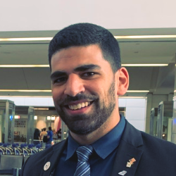

New
York, NY

Tal Bachar
Aspiring Software Engineer
About me
A detailed oriented, result-driven senior college student (Computer Science) currently attending Hunter
College (expected December 2020).
Interested in full-stack development, and always eager to learn about new technologies.
In both my academic and professional life, I have been consistently named as hardworking by my
professors, managers, and peers. Whether working on academic, extracurricular, or professional projects, I
apply proven analytical, creative thinking, and teamwork skills, which I hope to leverage into my next
position.